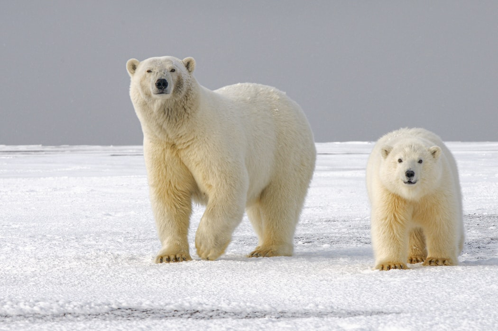
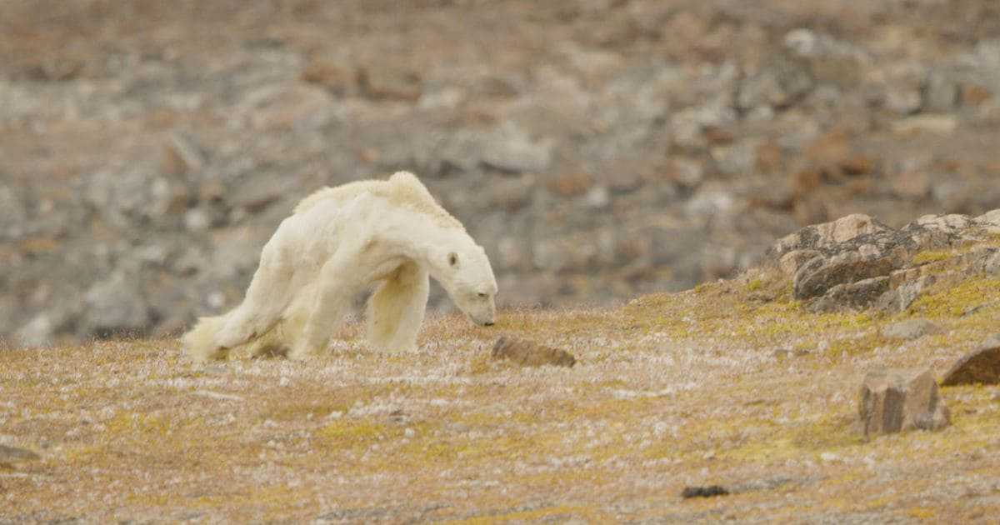

O urso-polar (nome científico: Ursus maritimus), também conhecido como urso-branco, é uma espécie de mamífero carnívoro da família Ursidae encontrada no círculo polar Ártico. Ele é o maior carnívoro terrestre conhecido e também o maior urso, juntamente com o urso-de-kodiak, que tem aproximadamente o mesmo tamanho. Embora esteja relacionado com o urso-pardo, esta espécie evoluiu para ocupar um estreito nicho ecológico, com muitas características morfológicas adaptadas para as baixas temperaturas, para se mover sobre neve, gelo e na água, e para caçar focas, que compreende a maior porção de sua dieta.
A espécie está classificada como "vulnerável" pela União Internacional para a Conservação da Natureza e dos Recursos Naturais (IUCN), com oito das dezenove subpopulações em declínio. Entre as ameaças que atingem o urso estão o desenvolvimento da região com a exploração de petróleo e gás natural, contaminação por poluentes, caça predatória e efeitos da mudança climática no habitat. Por centenas de anos, o urso-polar têm sido uma figura chave na vida cultural, espiritual e material dos povos indígenas do Ártico, aparecendo em muitas lendas e contos desses povos.
Distribuição geográfica e habitat
O urso-polar é encontrado no círculo polar ártico e áreas continentais adjacentes. A área de distribuição inclui territórios em cinco países: Dinamarca (Groenlândia), Noruega (Svalbard), Rússia, Estados Unidos (Alasca) e Canadá. Os limites meridionais de sua distribuição são determinados pela disposição anual do gelo flutuante e do gelo permanente durante o inverno. A espécie têm sido registrada ao norte até 88º e ao sul até a ilha St. Matthew e ilhas Pribilof, no mar de Bering, e baía de James e ilha de Terra Nova, no Canadá. Avistamentos esporádicos são relatados em Berlevåg na Noruega continental e nas ilhas Kurilas no mar de Okhotsk. Além disso, animais errantes ocasionalmente chegam na Islândia.
Na décadas de 1960 e 1970, os pesquisadores começaram a obter informações sobre a estrutura das populações de urso-polar dispersas por todo o Ártico e sobre a movimentação realizada pelos mesmos. Em 1993, durante o encontro da "IUCN's Polar Bear Specialist Group", a primeira tabela oficial da situação dessas populações foi formalizada com reconhecimento de quinze subpopulações. Em 2009, um total de dezenove subpopulações foram reconhecidas. Estes grupos reconhecidos devido a uma fidelidade sazonal a algumas áreas em particular, são geneticamente similares, não havendo evidências de que algum grupo tenha evoluído separadamente por períodos significativos de tempo.

Devido à ausência do desenvolvimento humano em seu habitat remoto, a espécie retém mais de sua distribuição original do que qualquer outro carnívoro existente. O urso-polar é frequentemente considerado um mamífero marinho por habitar primariamente o ambiente marinho. Seu habitat preferido são os bancos de gelo que cobrem as águas da plataforma continental e as áreas entre os arquipélagos árticos. Estas áreas, conhecidas como o "anel da vida do Ártico", tem alta produtividade biológica em comparação com as águas profundas do Ártico. O urso-polar tende a frequentar áreas onde o gelo encontra a água, como polínias e fendas (trechos temporários de águas abertas no gelo do Ártico) ao longo do perímetro do gelo polar flutuante, raramente adentrando na bacia polar nas proximidades do polo norte, onde a densidade de focas é baixa.
Características
O urso-polar é o maior carnívoro terrestre, o urso-de-kodiak (Ursus a. middendorffi) ocupa o segundo lugar sendo mais robusto que o polar, só que ligeiramente menor em tamanho.Um urso polar adulto pesa entre 350 a 700 kg e mede entre 2,4 a 3 metros de comprimento total. O corpo de um urso-polar é grande e encorpado, muito similar ao do urso-pardo, exceto pela ausência da protuberância nos ombros. O pescoço é mais longo que em qualquer outra espécie do gênero, e a cabeça é relativamente pequena e achatada. A espécie apresenta um acentuado dimorfismo sexual, sendo os machos maiores que as fêmeas em tamanho, e também com os dentes caninos maiores e uma arcada molar mais longa. Existe uma grande oscilação no tamanho dos ursos em diferentes regiões geográficas devido a existência de uma variação clinal de Spitzenberg, onde os ursos são menores, ao estreito de Bering, onde são maiores. Presumivelmente a variação clinal também é similar através da Sibéria em direção ao mar de Bering, apesar de não ter sido investigada. O maior espécime já registrado foi um macho que pesava 1,002 quilos quando foi morto em Kotzebue Sound, no noroeste do Alasca, em 1960, e que está em exposição no aeroporto de Anchorage.
A pelagem tem geralmente uma aparência branca, mas pode ser amarelada no verão, devido à oxidação provocada pelo sol ou pode até parecer cinzenta ou castanha, dependendo da estação e das condições de iluminação. A pele é preta, assim como o focinho e os lábios, e o pelo é incolor devido a falta de pigmento. A aparência branca é o resultado da luz sendo refletida a partir dos pelos transparentes. A pelagem é composta por uma densa camada de subpelos, com cerca de 5 centímetros de comprimento, e uma camada de pelos externos com 15 centímetros.

O urso-polar tem um andar plantígrado e possui cinco dígitos em cada pata. As patas dianteiras são maiores e possuem uma convergência com remos, que auxiliam no nado. As garras não são retráteis e medem de cinco a sete centímetros nos adultos. As solas das patas, traseiras e dianteiras, são peludas tanto para o isolamento térmico como para tração ao caminhar sobre gelo e neve. As fêmeas têm quatro mamas funcionais.
Os dentes refletem a sua dieta altamente carnívora. Os incisivos não são especializados e os caninos são alongados, cônicos e ligeiramente curvados. Os dentes carniceiros são pouco desenvolvidos e os primeiros pré-molares são rudimentares.
Comportamento e ecologia
O urso-polar é um animal solitário, exceto na época reprodutiva, e em certas épocas do ano quando machos adultos são altamente sociáveis. O pico de atividade ocorre no final da primavera e início do verão quando as focas são mais abundantes.
A espécie vive numa área de vida que incluem os locais de alimentação, de ninho, de acasalamento e de refúgio. Essas áreas não são defendidas e sobrepõe-se com a de outros ursos. Se as condições do gelo permitirem, um urso pode utilizar a mesma área ano após ano. As áreas de vida das fêmeas variam de pequenas delimitações de até 200 quilômetros quadrados a extensas áreas de até 960 000 quilômetros quadrados. Vários fatores afetam a quão grande será a área utilizada por uma fêmea num ano. Mães com filhos mais velhos têm áreas maiores, fêmeas com recém-nascidos áreas menores. Diferenças no tamanho entre populações também são afetadas pela dinâmica do gelo marinho, e são maiores nas áreas de gelo flutuante e menores no gelo permanente. As áreas de vida de machos são pouco estudadas, mas devem ser similares as das fêmeas adultas.

O urso é um excelente nadador e indivíduos têm sido vistos em águas abertas a cerca de 320 quilômetros da costa. Com sua gordura corporal fornecendo flutuabilidade, ele nada num estilo cachorrinho usando seus membros dianteiros para propulsão, alcançando uma velocidade de até 9,7 km/h. Ao caminhar, o urso-polar tende a ter um andar desajeitado e mantém uma velocidade média de cerca de 48 km/h. Quando em corrida, pode chegar a até 40 km/h.
Conservação
O urso-polar está classificado como "vulnerável" pela União Internacional para a Conservação da Natureza e dos Recursos Naturais (IUCN) desde 2006. A espécie estava classificada como pouco preocupante até 2005, quando a categoria foi elevada baseada em suspeitas de uma redução na população superior a 30% dentro de três gerações (45 anos) devido ao declínio na área de ocupação, na extensão da distribuição e na qualidade do habitat. A espécie está listada no "Apêndice II" da Convenção sobre o Comércio Internacional das Espécies da Fauna e da Flora Silvestres Ameaçadas de Extinção (CITES). Em 11 de junho de 2014, o governo da Noruega redigiu uma proposta para incluir o urso-polar no "Apêndice II" da Convenção sobre a Conservação das Espécies Migratórias de Animais Silvestres (CMS).
O Departamento do Interior dos Estados Unidos em 14 de maio de 2008 listou o urso-polar entre as espécies ameaçadas sob o "Endangered Species Act". No Canadá, o "Committee on the Status of Endangered Wildlife in Canada" recomendou em abril de 2008 que o urso fosse classificado como uma espécie de interesse especial de conservação sob o "Species at Risk Act". Na Rússia está listado no "Red Data Book of the Russian Federation". Na Noruega a espécie tem proteção total contra a caça predatória desde o tratado de Svalbard de 9 de fevereiro de 1920.
Uma significante diminuição da população de ursos-polares atribuída a caça predatória ocorreu na Groenlândia e na União Soviética no início da década de 1930, e nos Estados Unidos no final da década de 1960 e início de 1970. Como resultado das perdas populacionais, um acordo internacional foi alcançado entre as cinco nações que abrigavam a espécie (Canadá, Noruega, Estados Unidos, Dinamarca e União Soviética). Estes países assinaram o "International Agreement on the Conservation of Polar Bears" em 15 de novembro de 1973, em Oslo, o qual proibia a caça não regulamentada e bania o uso de aeronaves e quebra-gelos nas caçadas. O acordo também obrigava cada nação a proteger as áreas de reprodução e rotas migratórias, como também em proceder pesquisas e compartilhar os resultados obtidos. O pacto e as ações resultantes tomadas pelos signatários foram responsáveis pela recuperação do urso-polar. A população total da espécie têm sido considerada estável desde a década de 1980.
Em 2005 a população foi estimada entre 20.000 e 25.0000 por pesquisadores durante o décimo quarto encontro internacional do "IUCN SSC Polar Bear Specialist Group" realizado entre 20 e 24 de junho em Seattle. Em 2009 durante o décimo quinto encontro realizado entre 29 de junho e 3 de julho, em Copenhague, a população encontrava-se estável, permanecendo a mesma estimativa de 20.000 a 25.000. Das dezenove subpopulações uma está em crescimento, três estão estáveis, oito estão em declínio e as outra sete não possuem dados o suficiente para se determinar a tendência populacional.